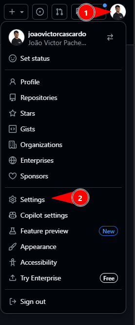
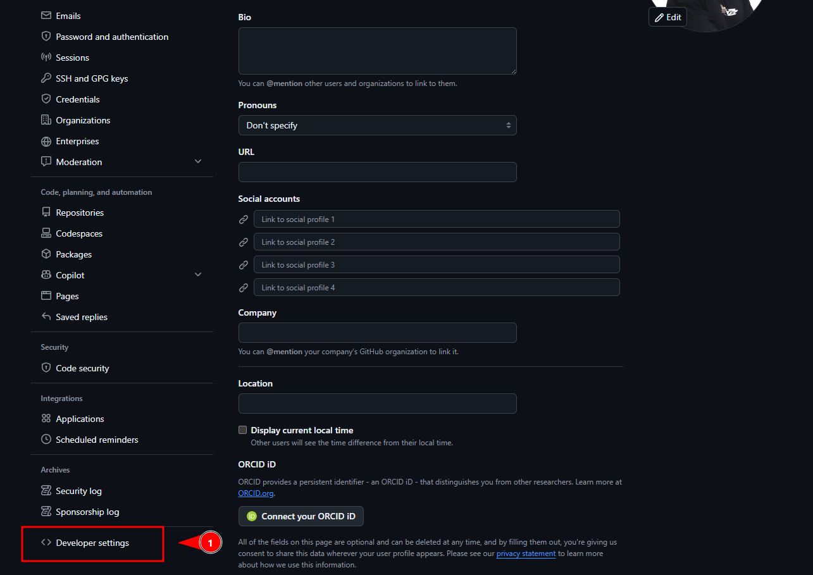
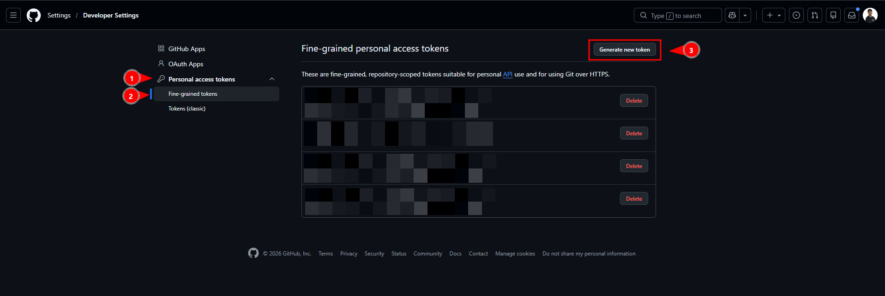
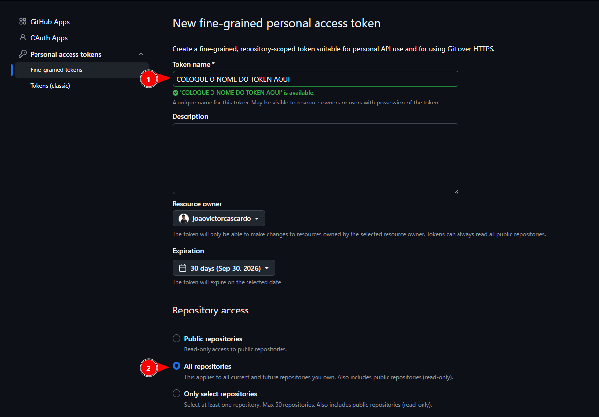
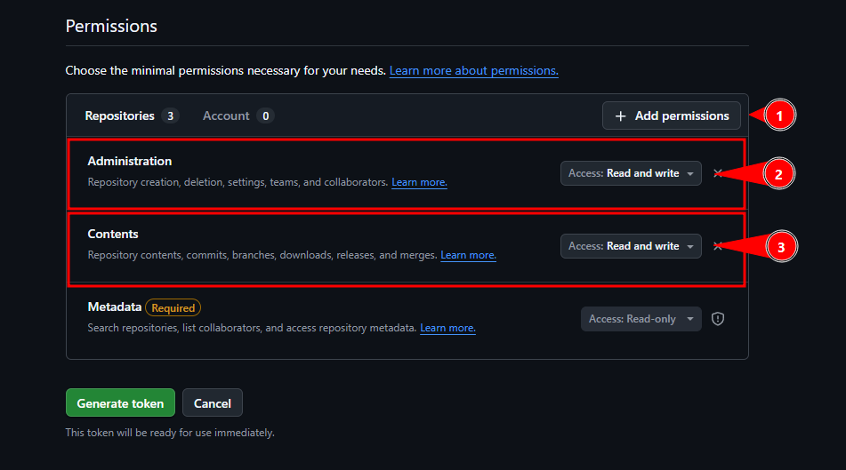

Snack → GitHub
A extensão precisa de um token de acesso pessoal do GitHub pra conseguir commitar nos seus repositórios. Leva um minuto:
No GitHub, clique na sua foto de perfil no canto superior direito e vá em Settings.

Na barra lateral das configurações, role até o fim e clique em Developer settings.

Abra Personal access tokens, depois Fine-grained tokens, e clique em Generate new token.

Dê um nome pro token. Em Repository access, marque All repositories (a descrição diz "This applies to all current and future repositories you own. Also includes public repositories (read-only)."). É a opção mais simples e a única que deixa o botão Criar repositório novo da extensão funcionar, já que um repo que ainda não existe não aparece na lista.

Em Permissions, clique em
Add permissions e coloque
Read and write em Contents (obrigatório
pra commitar) e em Administration (só pro botão de criar
repositório). O Metadata o GitHub adiciona sozinho.
Clique em Generate token.

Copie o token gerado e cole no campo abaixo.
Fica salvo só neste navegador, em armazenamento local da extensão.